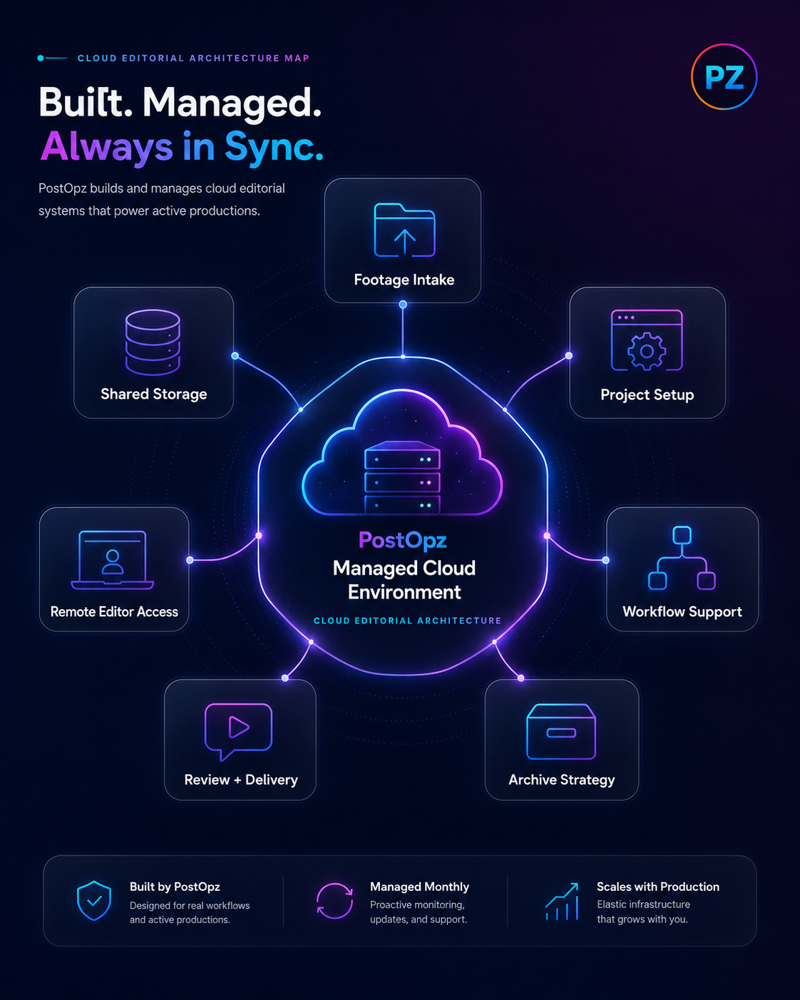
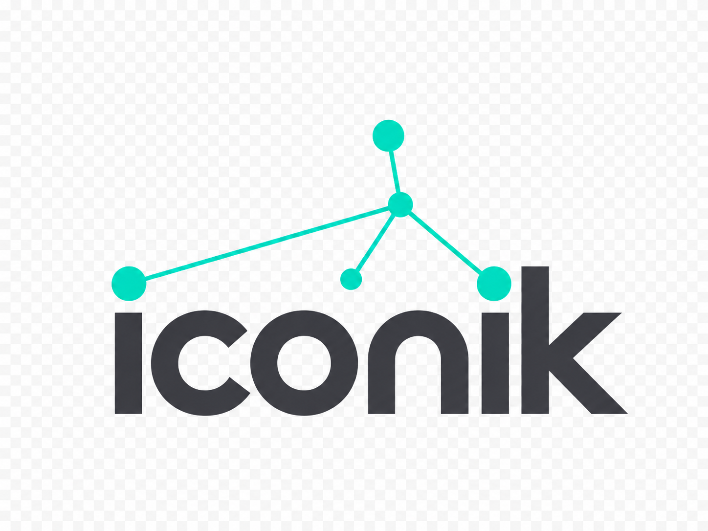
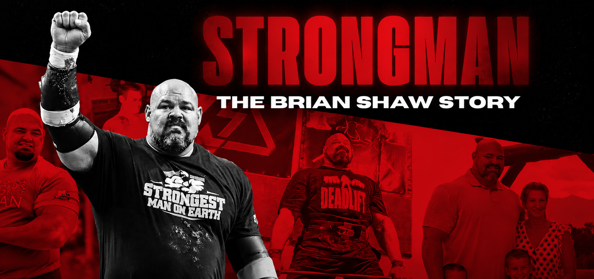
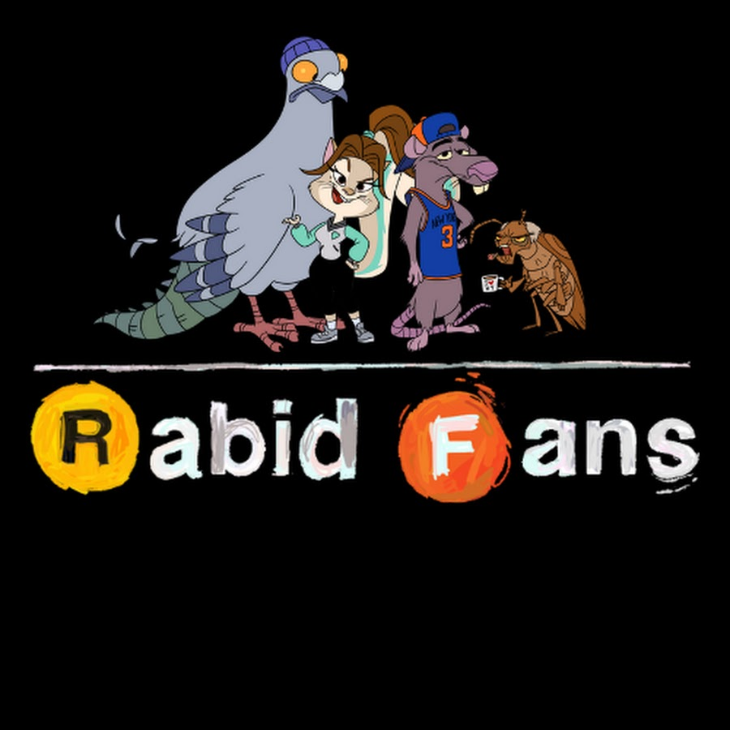
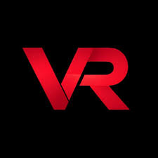
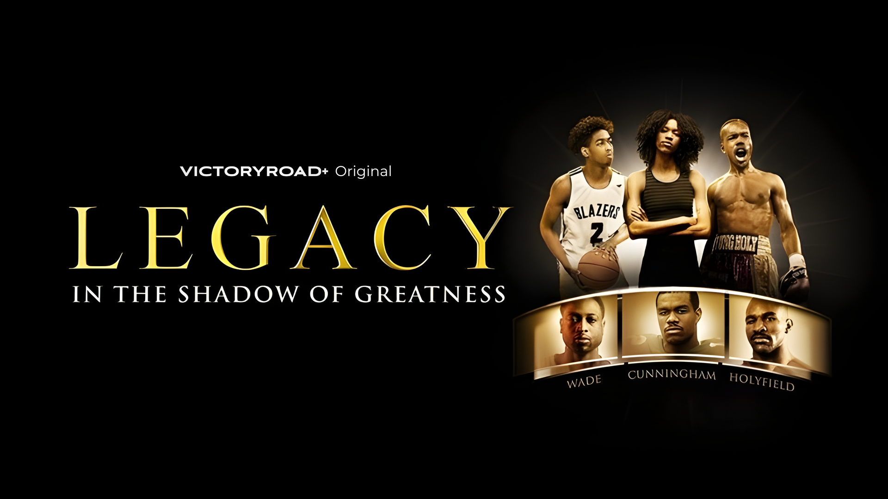
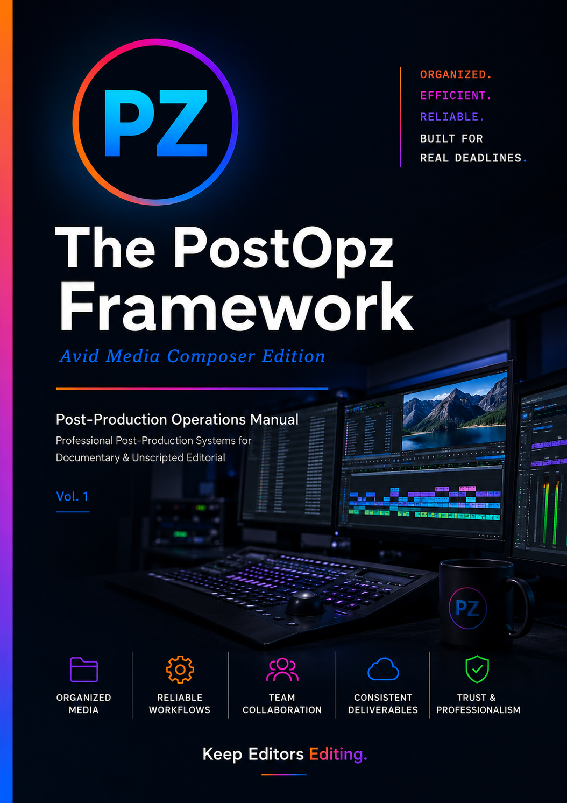
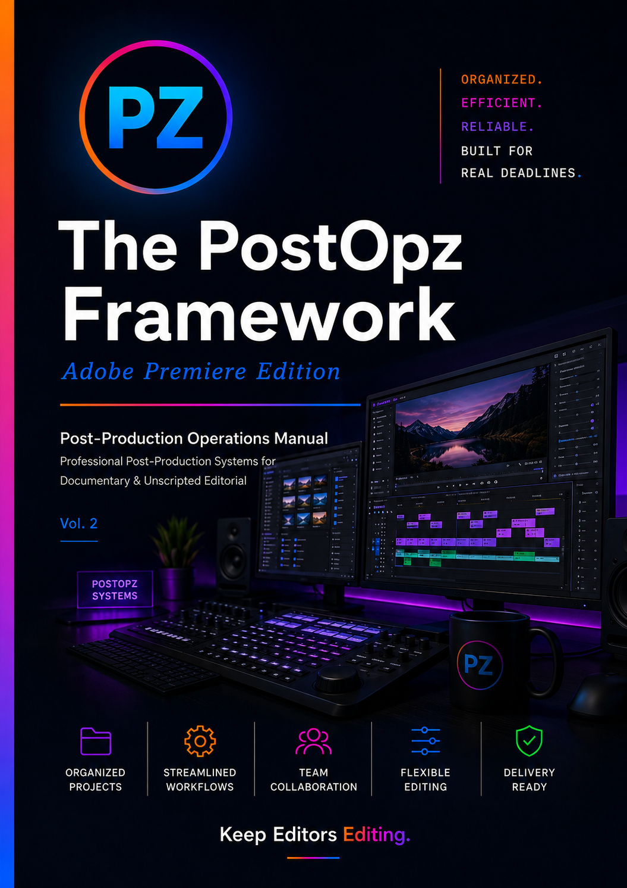
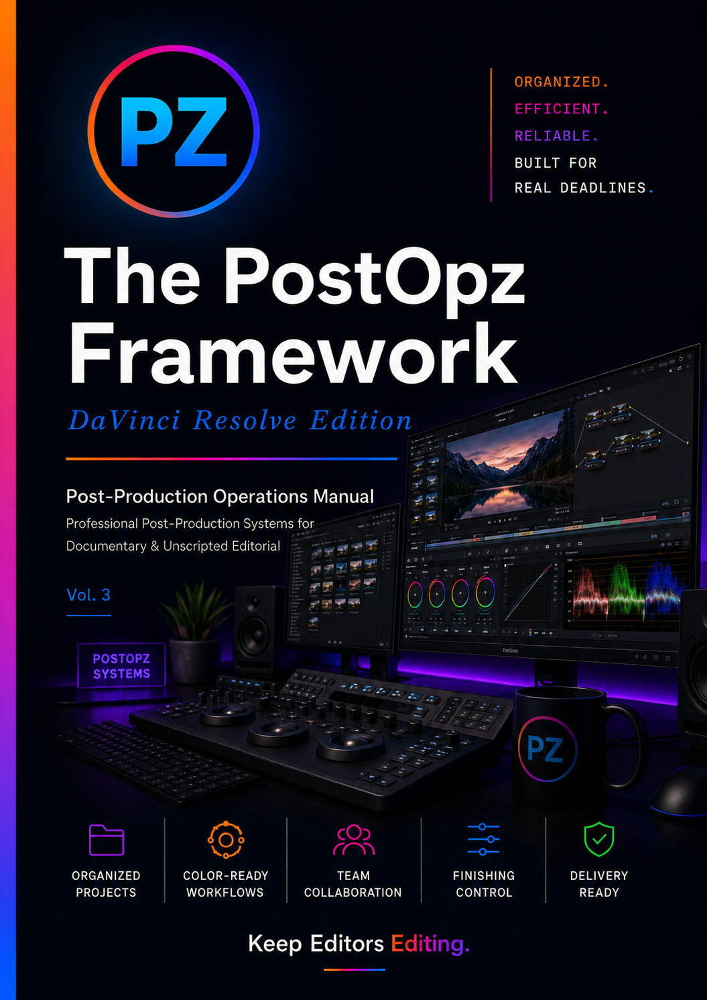
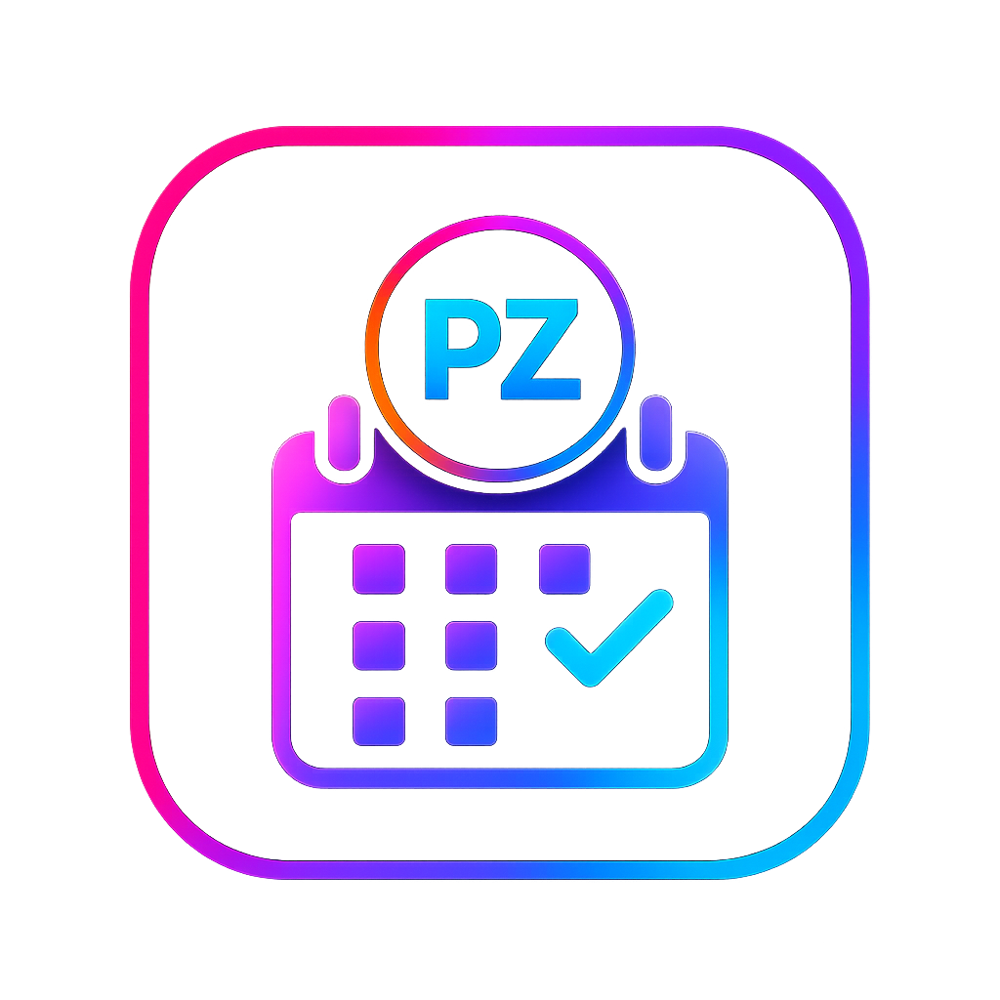

Cloud Editorial Infrastructure
- Cloud storage architecture
- Folder and permission structure
- Remote editor access
- Upload and handoff paths
- Workflow standards documentation
Systems. Support. Structure.
PostOpz builds and supports cloud editorial workflows that replace scattered drives, messy handoffs, and fragmented remote setups with organized media operations, managed support, edit-ready prep, and archive strategy.

BUILT AROUND THE TOOLS POWERING MODERN CLOUD EDITORIAL ENVIRONMENTS.





PostOpz builds the operational layer around your editorial workflow: cloud storage structure, remote access, upload paths, project standards, review flow, archive strategy, and scoped assistant editor operations when production demands it.
Upload Paths
Cloud Setup
Remote Access
Storage Strategy
PostOpz workflows are based on real-world assistant editor, editor, and post-production experience across documentary, reality, competition, branded, and streaming productions.
The systems behind PostOpz were developed across premium documentaries, long-form docuseries, creator channels, and remote editorial environments. That production experience now informs every workflow we design, launch, and support.




STREAMING DELIVERY AT SCALE
A structured long-form editorial environment kept media organized, editors supplied, and the production moving through finishing and delivery for Amazon Prime Video and VictoryRoad+.
REPEATABLE CREATOR PUBLISHING
A repeatable editorial system gave the channel a clearer path from incoming footage to published content, reducing operational friction as production volume increased.
SHARED INFRASTRUCTURE FOR GROWTH
A shared editorial backbone gave VictoryRoad a more consistent way to manage media, support multiple content initiatives, and preserve assets across an expanding production slate.
CONTINUITY ACROSS THE SERIES
Editors and producers worked from a consistent, organized environment that reduced friction across the series and kept production moving from media intake through final delivery.
DELIVERY TODAY. ACCESS TOMORROW.
The production maintained organized editorial continuity through delivery while preserving project structure and media access for future versions, restoration, and long-term use.
Start with a custom cloud setup, scale into managed workflow support, expand into multi-production coverage, or hand off raw footage for edit-ready preparation. PostOpz offers a system built for real editorial operations.
Professional-grade post-production operations manuals built for real assistant editing pipelines, training programs, and implementation inside working post teams.

Vol. 1 · Out NowA start-to-finish assistant editing operations manual for professional Avid Media Composer pipelines, built for documentary, unscripted, and real post production workflows.
Limited Time Launch Pricing • Save $50

Vol. 2 · WaitlistA professional Premiere-focused operations manual for edit-ready project setup, media organization, collaboration, flexible editing, and delivery-ready workflows.

Vol. 3 · WaitlistA professional Resolve-focused operations manual for organized projects, color-ready workflows, team collaboration, finishing control, and delivery preparation.
Bring PostOpz in for workflow review, post pipeline planning, assistant editor operations guidance, SOP development, or implementation support tailored to your current production environment.
Request ConsultationLicense The PostOpz Framework for post houses, studios, production companies, networks, schools, or training programs. Custom team onboarding and training sessions are available by scope.
Request LicensingStart with a short discovery intake. PostOpz will review your production needs, storage footprint, editor count, delivery requirements, and support scope before recommending the right cloud editorial plan.
Start Cloud Discovery